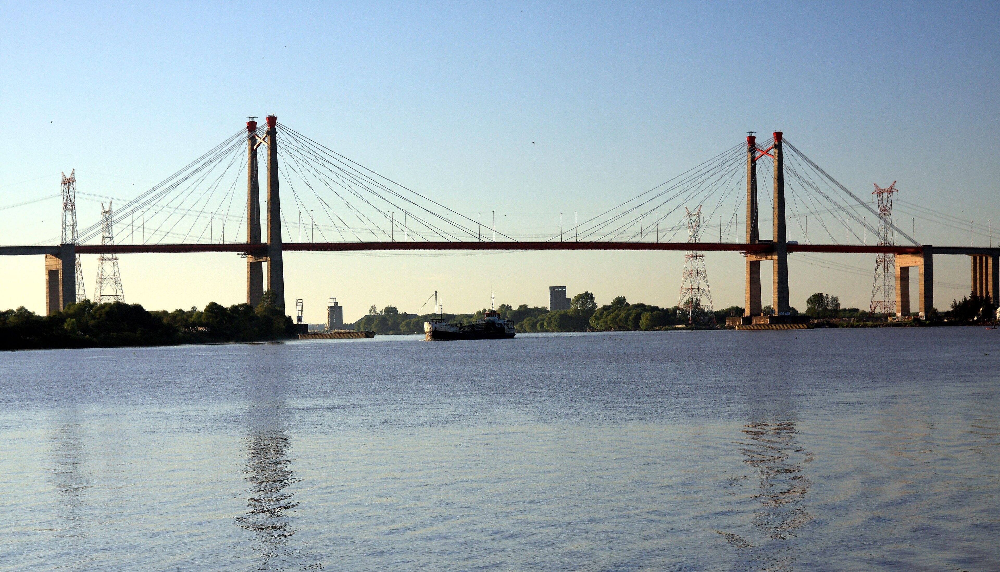

Paseo Costanera
Atractivo natural
Ver más
Esta guía te ayuda a planificar una escapada y descubrir Zárate: su identidad tanguera, la naturaleza a orillas del Paraná, su historia y el kartódromo.
Ver recorridoUn orden sugerido para conocer Zárate: empezás en la costanera, seguís por el centro y terminás en el kartódromo. Las ubicaciones son aproximadas.